3.2 2D and 3D trigonometry, sine rule, cosine rule and area2.8 Reciprocal and simple rational functions, equations of asymptotes3.6 Pythagorean identity and double angles2.10 Solving equations graphically and analytically2.7 Solutions of quadratic equations and inequalities, discriminant and nature of roots5.13 Limits by l'Hôpital's rule or Maclaurin series5.19 Maclaurin series5.12 Continuity, differentiability, limits and differentiation from first principles
Question
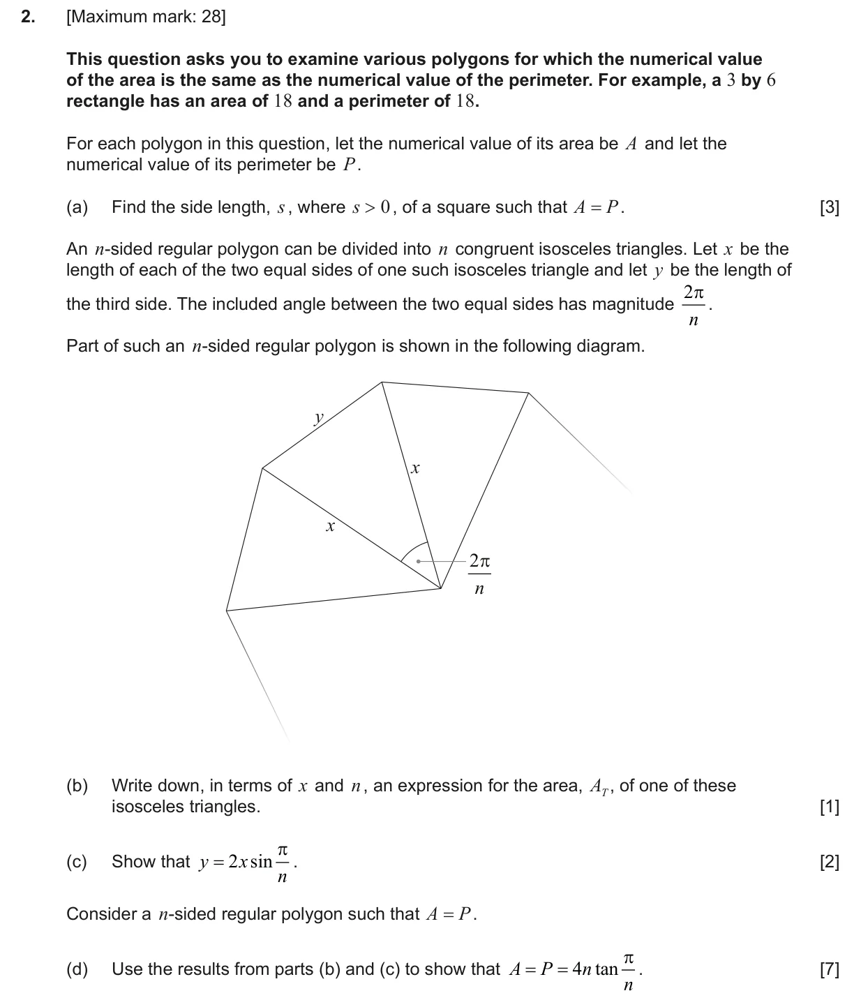
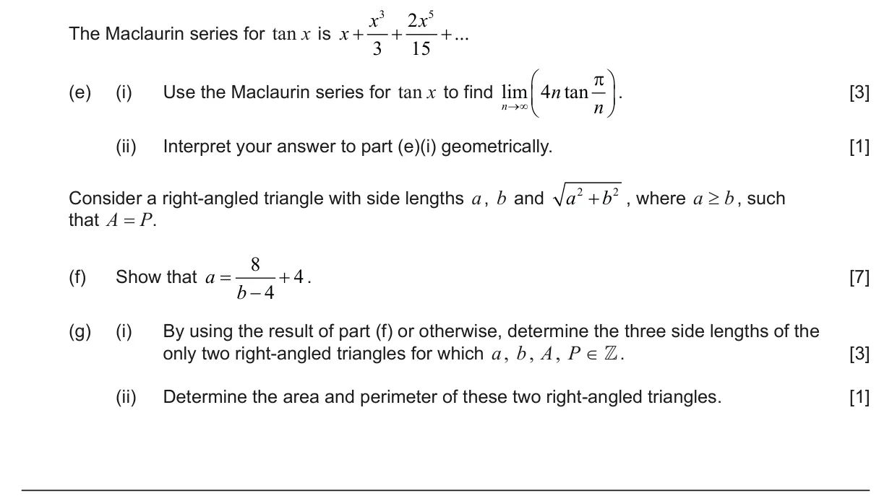
Markscheme
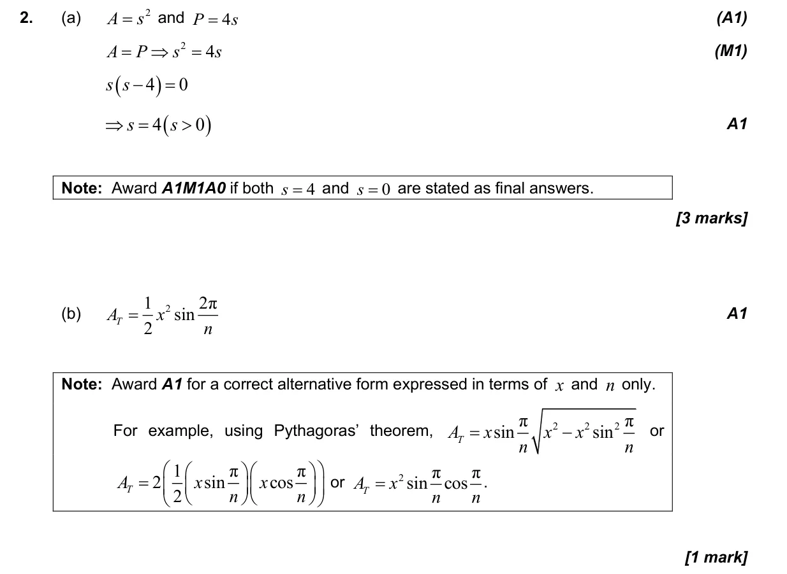
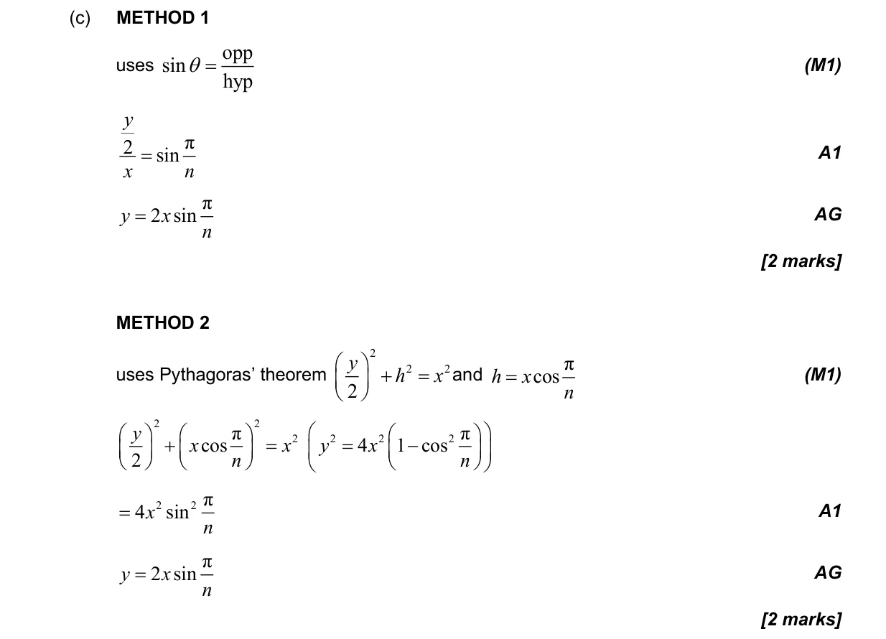
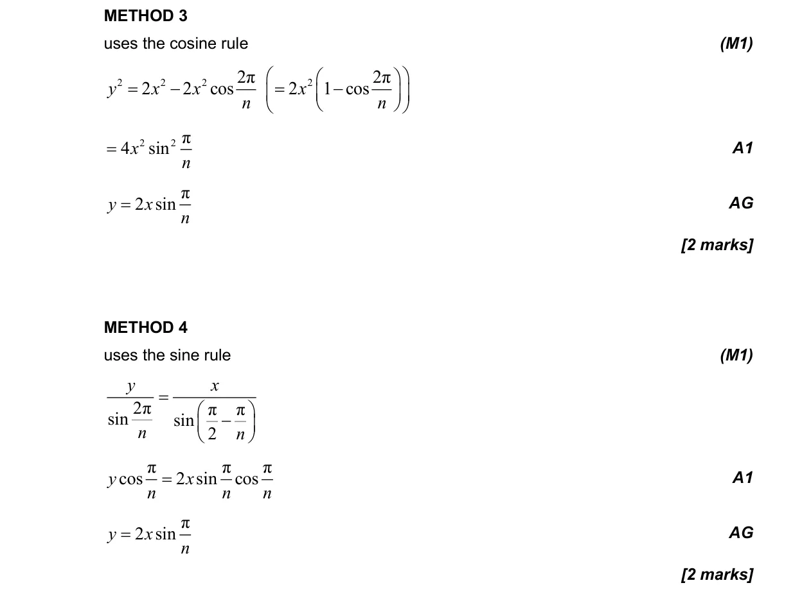
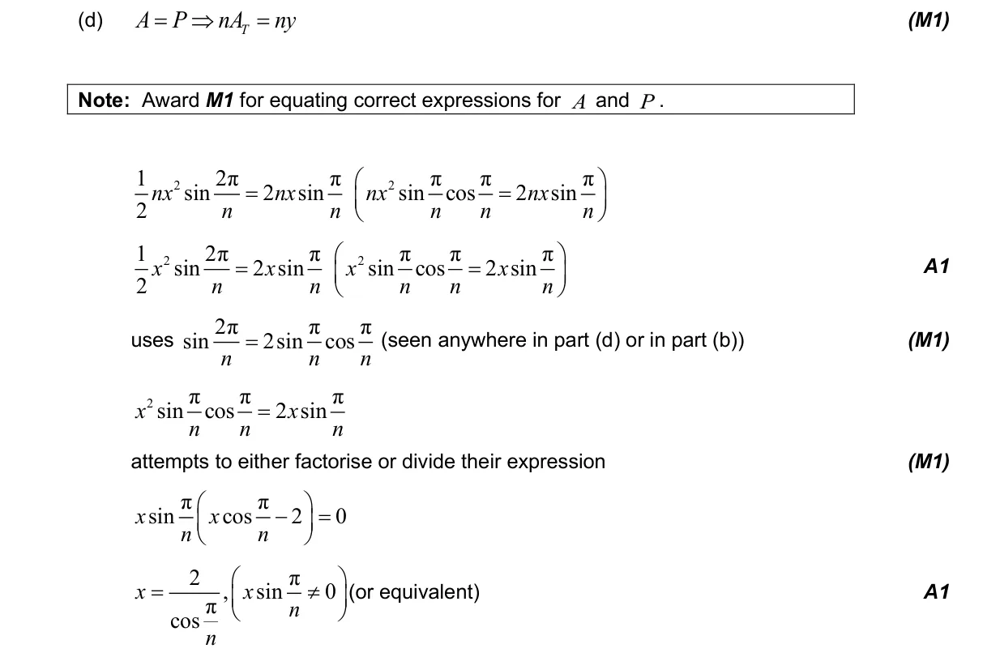
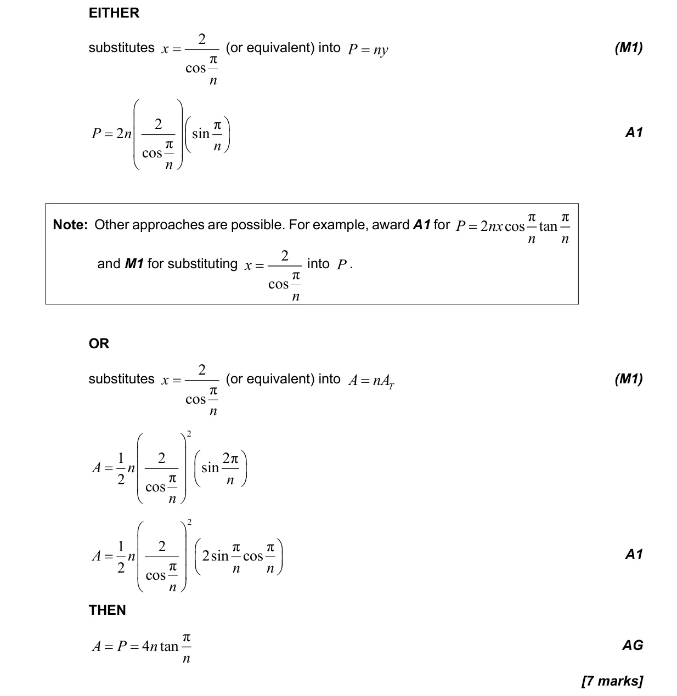
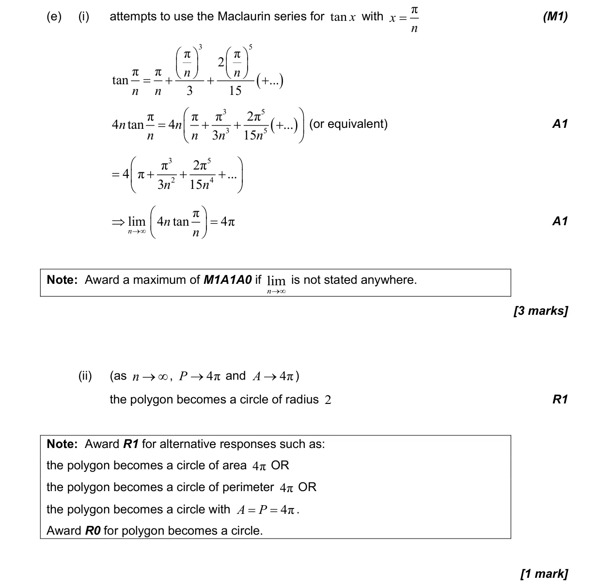
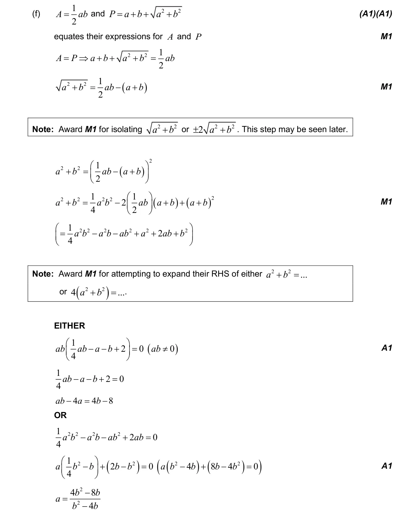
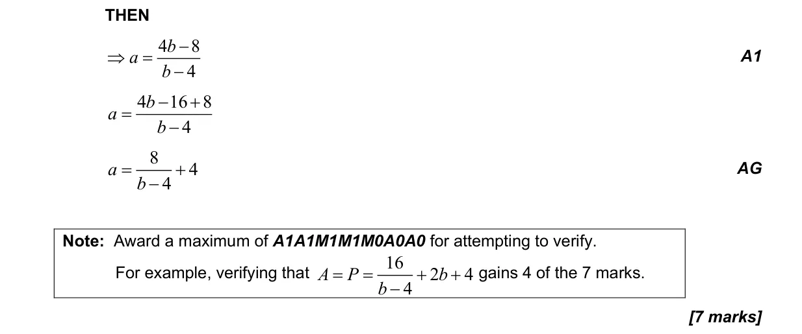
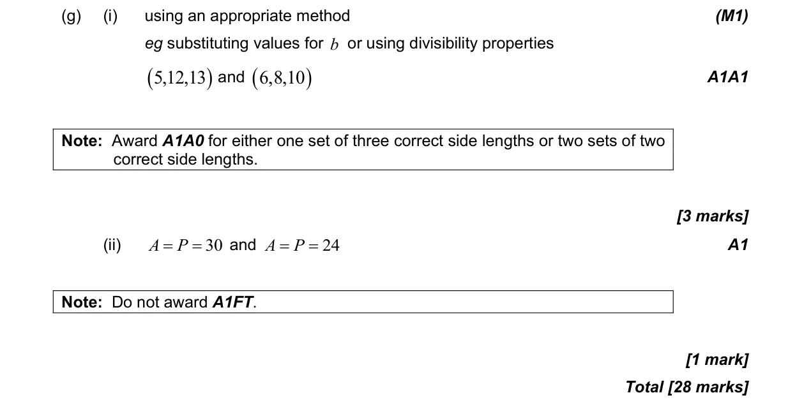